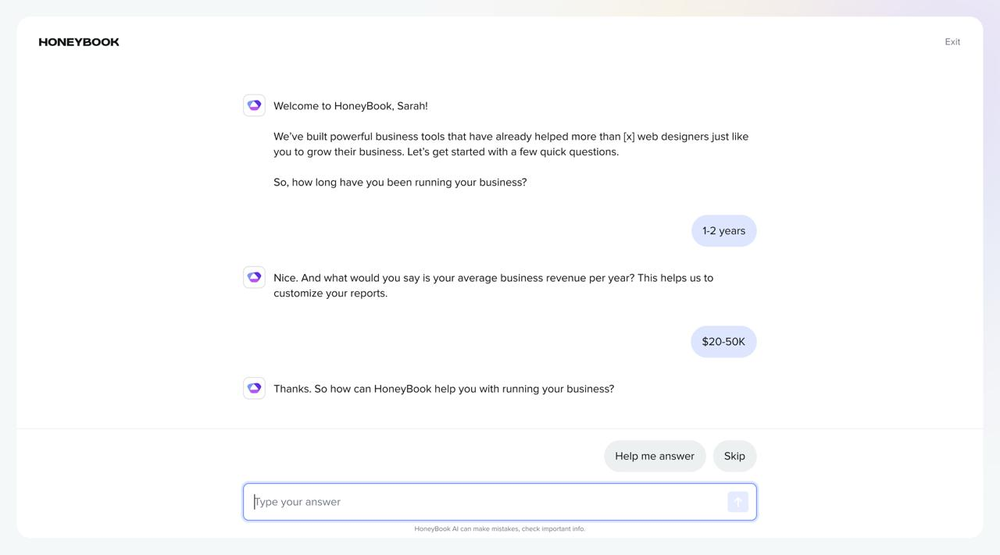
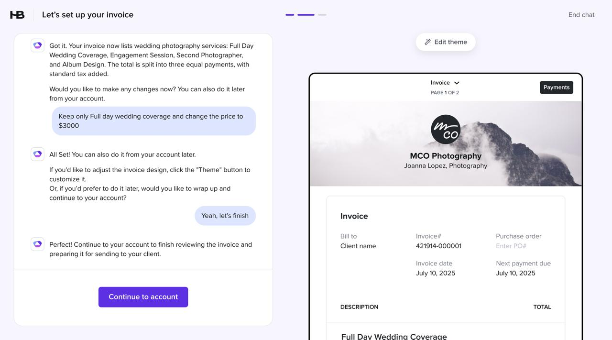

HoneyBook / 2024–25
I led the design of an AI-powered onboarding assistant that guides new members through HoneyBook's initial setup using conversational UX. Instead of navigating a static checklist, users interact with an assistant that recommends the next best steps, explains product concepts, and helps them complete critical actions like setting up services, files, and workflows.
The goal was to reduce onboarding friction and accelerate time-to-first-value by turning onboarding into a guided, interactive experience rather than a self-serve configuration process.
Before

Static Q&A collecting business data — not helping users experience the product's value.
After

AI-assisted flow building a real document with the user — surfacing value immediately.